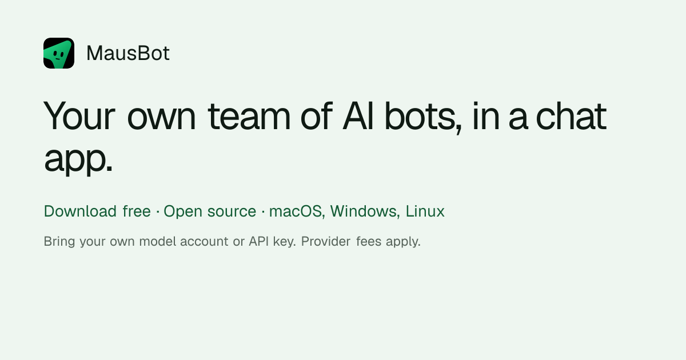

Instagram｜OpenClaw、Hermes 與 MausBot：把既有 Agent 編成團隊的定位比較

一句話摘要
這支 Reel 的重點不在「誰最好」，而是把角色拆開：聊天入口、可累積脈絡的 agent 與多 agent 編排層可以並存。真正要驗證的是每一層需取得哪些帳號、資料與執行權限，而不是只看同一張比較圖。
Reel 可見內容
帳號 `buildwithomkar` 的影片長約 70.9 秒，公開文案稱 OpenClaw、Hermes、MausBot 並非競品，而是三種不同事物。擷取時以約第 5、35、58 秒畫面交叉確認：
- 初段列出 OpenClaw、Hermes、MausBot 三者。
- Hermes 畫面呈現桌面 app、審核／批准介面與「需要人類確認」的敘事；這是影片內容，非本次重新驗證的 Hermes 功能規格。
- MausBot 畫面明確自稱為「既有 agents 的 orchestrator」，以 Chief of Staff 方式協調 Research、Design、Build 等工作，並列出 Claude Code、Codex、Grok、Hermes、OpenClaw。
- 影片暗示前三者可形成「one team」，但未提供版本、安裝方式、連接器範圍、相容性測試或安全模型，故不應將畫面中的 WORKING 狀態理解為所有環境皆可直接使用。
第一方可確認的 MausBot 範圍
MausBot 官網將產品定位為開源的 Grok Bot alternative，並說明使用者需自帶 AI 帳號或 API key，供應商的費用與使用限制仍會適用。網站可確認的工作方式包括：
- 每個 bot 可有不同任務、模型與執行環境，在使用者自己的機器上平行執行。
- 可從已安裝的 Claude、Codex、Grok CLI 等來源使用既有登入或訂閱；網站稱本機 harness 位於 127.0.0.1，將不同供應商的事件統一處理。
- 支援 Gmail、Slack、GitHub、Notion、Linear 等連接情境，但 OAuth、資料存取範圍與每個 connector 的權限仍需逐一檢查。
- GitHub 專案 `milind-soni/OpenMausBot` 的開源部分採 Apache License 2.0；`enterprise/` 有不同授權，見下方 2026-11-04 補充。星數、平台支援、模型選項與功能均會變動。
不是「免費就無成本」
「開源」描述的是程式碼授權，不等於雲端運算、模型 API、第三方 connector 或帳號訂閱都免費。即使使用既有 CLI 登入，仍要確認所屬訂閱方案是否允許該類自動化與持續背景任務，並留意額度、帳單、資料保留與服務條款。
導入前檢核表
- 先確認要解決的是單一 agent 工作流，還是多 agent 的分工、排程與驗收問題。
- 以獨立、低敏感帳號試做一項唯讀任務；不要一開始連接信箱、付款、正式 GitHub 寫入權限或客戶資料。
- 逐一查看 agent 的工具權限、OAuth scope、是否能審核或中止、以及是否可保留完整執行紀錄。
- 將「影片顯示可以協作」與「你的作業系統、版本、登入權益與 connector 真的相容」分開驗證。
- 上線前對寫入、傳送、購買、部署、刪除等不可逆行為保留人工批准。
2026-11-04 補充｜Threads：OpenMausBot 的版本與安全邊界
Asgard AI 的公開 Threads 介紹原名 OpenGrokBot 的 OpenMausBot，提到 0.1.136 的團隊 bot 分享、閒置摘要及 Just do it，以及 harness、雲端／本機電腦與 Composio。這是不同貼文對同一產品的補充，不另建重複條目。可見渲染主文後即進入「相關串文」推薦區，未取得可確認的作者續文；不代表續文不存在。
- 版本：官方 0.1.136 於 2026-10-31 23:27 UTC 發布，release notes 確有逐 bot 指定團隊權限、閒置摘要和 Just do it；後者在「Easier」而非全部列作新功能。2026-11-04 查詢時最新正式版為 0.1.140，GitHub 11,926 星，均會變動。
- 授權：GitHub API 偵測 Apache-2.0，但實際 LICENSING 明列 `enterprise/` 另受 source-available 商用條款限制，生產執行企業功能須有效授權；第三方元件另有授權。不能將整個 repo 一概視為 Apache。
- 權限不是一律按允許：官方文件稱支援的供應商可顯示核准卡，但 Just do it 不會沿途停下逐項詢問；工具、供應商及模式不同，不能保證所有 shell、檔案修改或外部動作都事前人工核准。觸發器的建立在 README 中描述為不需確認；應另外核對排程、連接器的讀寫及發送授權。
- Local VM 官方實際描述是本機 Docker／Podman 容器化 Linux 桌面，並保留掛載 workspace 和瀏覽器資料；不是對所有工作負載提供完整的獨立虛擬機安全保證。直接控制主機需明確啟用和 OS 授權；目前 README 表示 Ubuntu Wayland 主機控制仍停用。雲端桌面及掛載資料仍有網路、服務商和憑證暴露風險。
- 資料流：README 稱本機 harness 在 127.0.0.1、逐執行緒事件與本地紀錄保存在 `~/.openmausbot`；這不是本機模型推理或資料永不外傳。模型提供商、Boat 雲端電腦、Composio OAuth 與連接服務依所選模式處理資料。CLI 文件稱 API key 明文存放於受限權限的 config.json；封裝桌面版對支援項目使用 OS safeStorage，不能混為一談。資料夾讀取權限、截圖、備份與主機入侵仍有風險。
- 訂閱與成本：專案稱可使用既有 Claude／Codex CLI 登入；Anthropic 官方說明符合條件的 Pro／Max／Ultra 可使用 Claude Code，但額度及適用條款須看個人方案，API、雲端、第三方服務可能另計費。OpenAI 方案說明本次遭 403 阻擋，無法核實具體 Codex 權益或第三方自動化許可，不保證所有訂閱可合法無限使用。
- 本次僅查公開資料，未安裝、登入、連接帳號或執行產品，沒有實測功能、隔離或安全效果。官方現行 main 文件可能超前已發布版本。
原貼文：https://www.threads.com/@asgard_ai_platform/post/DfTqym_EcuI
官方來源：
- https://github.com/milind-soni/OpenMausBot/releases/tag/v0.1.136
- https://github.com/milind-soni/OpenMausBot/releases/tag/v0.1.140
- https://github.com/milind-soni/OpenMausBot/blob/87768b5b41348e8b7f4cac31a11d7fbbed9406c7/LICENSING.md
- https://github.com/milind-soni/OpenMausBot/blob/87768b5b41348e8b7f4cac31a11d7fbbed9406c7/apps/docs/content/docs/computers/local-vm.mdx
- https://github.com/milind-soni/OpenMausBot/blob/87768b5b41348e8b7f4cac31a11d7fbbed9406c7/apps/docs/content/docs/security/permissions-and-secrets.mdx
- https://github.com/milind-soni/OpenMausBot/blob/87768b5b41348e8b7f4cac31a11d7fbbed9406c7/docs/cli-onboarding.md
- https://github.com/milind-soni/OpenMausBot/blob/87768b5b41348e8b7f4cac31a11d7fbbed9406c7/docs/composio.md
- https://support.claude.com/en/articles/11145838-use-claude-code-with-your-pro-max-or-ultra-plan
- https://help.openai.com/en/articles/11369540-using-codex-with-your-chatgpt-plan （本次 403）
本條沿用原先已保存的官方產品示意圖，不將 Threads 圖當作開源素材；該貼文圖片權利未確認，且登入遮罩使畫面未能完整檢視。來源紀錄：`source-archive/2026-11-04-threads-asgard-openmausbot.json`。
原始與查核連結
- Instagram Reel：https://www.instagram.com/reel/DeUoo5qNMIW/
- MausBot 官網：https://mausbot.com/
- OpenMausBot GitHub：https://github.com/milind-soni/OpenMausBot
- GitHub LICENSE：https://github.com/milind-soni/OpenMausBot/blob/main/LICENSE
來源擷取紀錄：`source-archive/2026-10-10-instagram-buildwithomkar-openclaw-hermes-mausbot.json`